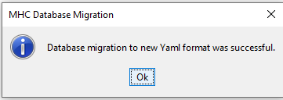
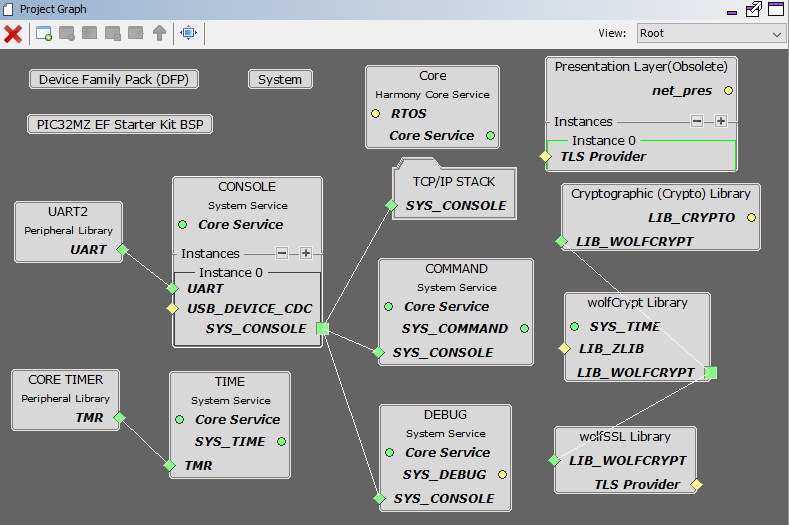
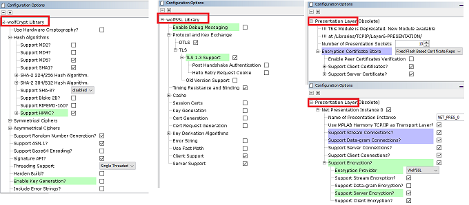
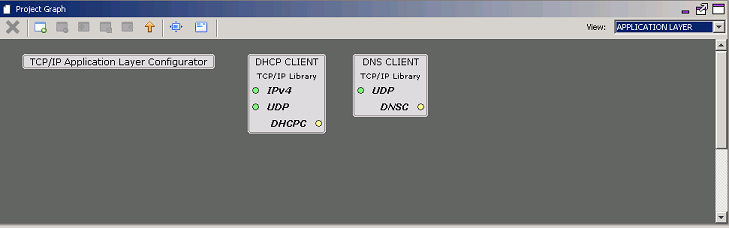
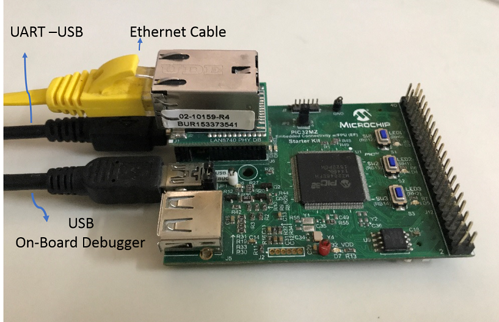
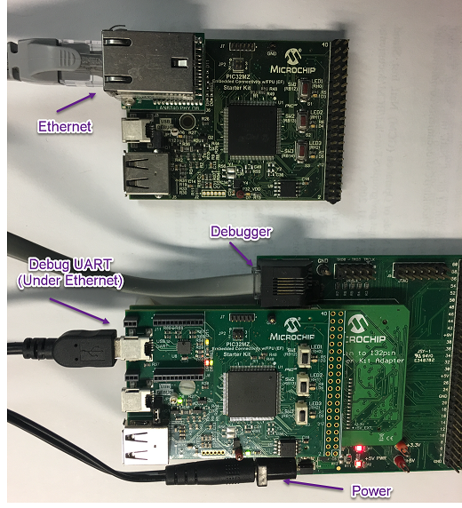

This configuration demonstrates creating an Internet client that uses the MPLAB Harmony TCP API to create a TCP/IP connection to a Web server. The connection can either be clear text, or it can use TLS to encrypt the connection with wolfSSL. The demonstration can use either IPv4 or IPv6.
This demonstration uses the NET_PRES layer for encrypted communication through an external service provider for TLS support.
TCP/IP TCP WolfSSL Client MHC Configuration
The following Project Graph diagram shows the Harmony components included in the TCP Client demonstration application.
MHC is launched by selecting Tools > Embedded > MPLAB® Harmony 3 Configurator from the MPLAB X IDE and after successful database migration , TCP/IP demo project is ready to be configured and regenerated.
TCP/IP Root Layer Project Graph
The root layer project shows that UART2 peripheral is selected to do read and write operation for TCP/IP commands.
This is the basic configuration with SYS_CONSOLE, SYS_DEBUG and SYS_COMMAND modules. These modules are required for TCP/IP command execution.
TCP sockets calculate the ISN using the wolfSSL crypto library.
NOTE:-FreeRTOS component is required for RTOS application. For bare-metal (non-RTOS) FreeRTOS component should not be selected.
The below snapshot provides the details of the wolfssl_crypto, wolfSSL and presentation layer configuration.
NOTE:- The above diagram shows that the Hardware cryptography is disabled for wolfssl_crypto configuration. To work with Hardware cryptography, the Hardware cryptography should be enabled wolfssl_crypto Configuration.
TCP/IP Required Application
TCP/IP demo use these application module components for this demo. Announce module to discover the Microchip devices within a local network. DHCP Client module to discover the IPv4 address from the nearest DHCP Server.DNS Client provides DNS resolution capabilities to the stack. During these components selection, the required transport and network modules are also selected.
TCPIP Driver Layer
Internal ethernet driver(ethmac) is enabled with the external LAN8740 PHY driver library. The MIIM Driver supports asynchronous read/write and scan operations for accessing the external PHY registers and notification when MIIM operations have completed.

TCP/IP TCP WolfSSL Client Hardware Configuration
This is the following section describes the hardware configurations for both PIC32MZ EF and DA devices. One of the configuration can be used for this application demonstration as per the microcontroller.
- 1.
This section describes the PIC32MZ EF device default hardware configuration use USB device as on board debugger and programmer for this application demonstration.
Refer to the PIC32MZ EF Ethernet Starter Kit User Guide
No hardware related configuration or jumper setting changes are necessary. Connect the mini USB cable from the computer to the USB DEBUG connector on the PIC32MZ EF Ethernet Starter Kit
Connect the mini USB cable from the computer to the USB-UART connector on the PIC32MZ EF Starter Kit
Establish a connection between the router/switch with the PIC32MZ EF Starter Kit through the RJ45 connector on PHY daughter board
- 2.
This section describes the PIC32MZ EF device hardware configuration with the combination of RealICE, or ICD4 and the Starter Kit I/O Expansion Board for debugging and programming for this application demonstration.
Connect the 168 pin to 132 pin Starter Kit Adapter board to the Starter Kit I/O Expansion Board, optionally use a nylon nut and bolt to secure the two boards together
Connect the PIC32MZ Extended Connectivity w/FPU (EF) Starter kit to the 168 pin to 132 pin Starter Kit Adapter board, optionally use a nylon nut and bolt to secure the two boards together
Connect the RealICE, or ICD to the RJ-11 port on the Starter Kit I/O Expansion Board
Connect a USB Mini-b (5 pin) cable to the DEBUG USB port connect an Ethernet cable to the Ethernet Port
Connect the 9V power supply to the Starter Kit I/O Expansion Board
TCP/IP WolfSSL TCP Client Running Application
This table list the name and location of the MPLAB X IDE project folder for the demonstration.
| Project Name | Target Device | Target Development Board | Description |
|---|---|---|---|
| pic32mz_ef_sk.X | PIC32MZ2048EFH144 | PIC32MZ EF Starter Kit | Demonstrates the wolfSSL TCP Client on a development board with PIC32MZ2048EFH144 device and LAN8740 PHY daughter board. This is a bare-metal (non-RTOS) implementation. WolfSSL Hardware crypto enabled |
| pic32mz_ef_sk_freertos.X | PIC32MZ2048EFH144 | PIC32MZ EF Starter Kit | Demonstrates the wolfSSL TCP Client on development board with PIC32MZ2048EFH144 device and LAN8740 PHY daughter board. This implementation is based on FreeRTOS. |
| pic32mz_ef_sk_sw.X | PIC32MZ2048EFH144 | PIC32MZ EF Starter Kit | Demonstrates the wolfSSL TCP Client on a development board with PIC32MZ2048EFH144 device with and LAN8740 PHY daughter board. This is a bare-metal (non-RTOS) implementation. WolfSSL Software crypto enabled |
Running Demonstration Steps
- 1.
Build and download the demonstration project on the target board.
- 2.
If the board has a UART connection:
- a.
A virtual COM port will be detected on the computer, when the USB cable is connected to USB-UART connector.
- b.
Open a standard terminal application on the computer (like Hyper-terminal or Tera Term) and configure the virtual COM port.
- c.
Set the serial baud rate to 115200 baud in the terminal application.
- d.
See that the initialization prints on the serial port terminal.
- e.
When the DHCP client is enabled in the demonstration, wait for the DHCP server to assign an IP address for the development board. This will be printed on the serial port terminal.
Alternatively: Use the Announce service or ping to get the IP address of the board.
Run tcpip_discoverer.jar to discover the IPv4 and IPv6 address for the board.
- a.
- 3.
Execution:
As soon as a valid IP address is assigned through the DHCP to the demonstration, it is ready to accept console commands.
There are three commands available in the demonstration from the serial port:
openurl < url > - The < url > argument must be a fully formed URL; for instance, https://www.microchip.com/ ipmode < mode > - The < mode > argument selects the IP version. 0 - Any IP version, 4 - IPv4 only, 6 - IPv6 only stats - Output the statistics of the previous openurl run. Statistics such as how long each phase of the connection took, and how many bytes were transferred.
- a.
After the successful broad bring up, the console output becomes

- b.
Input the following command from the serial port: openurl < url > - The < url > argument must be a fully formed URL; for instance, https://www.microchip.com/.
For this above URL , the DNS module will make a DNS query. Then it will open a connection to the requested URL and perform a simple HTTP GET command. The response received from the server will be printed on the terminal application through the serial port.
The expected output -

- a.